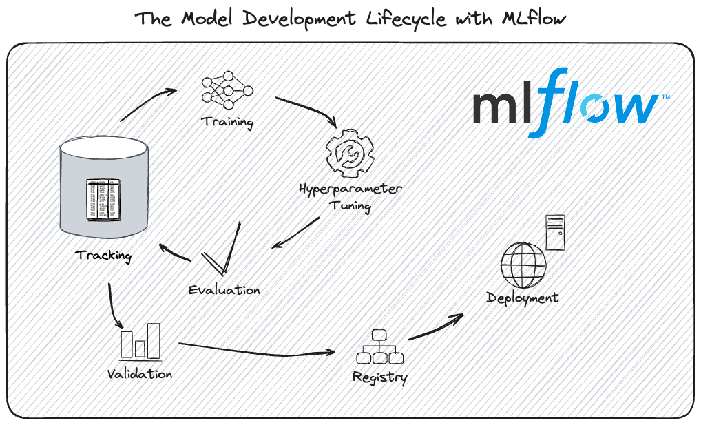

Experiments tracking with
Marie-Hélène Burle
November 25, 2025
What is MLflow?
FOSS and compatible
works with any ML or DL framework any hyperparameter tuning framework (e.g. integration with Optuna, integration with Ray Tune, integration with hyperopt combine with dvc for dataset versioning
Platform for AI life cycle

this webinar focuses on experiment tracking
Limitations
MLflow projects do not (yet) support uv
some functionality missing for deployment and production for large companies (but irrelevant for research and no FOSS option exists)
Experiment tracking with MLflow
What is experiment tracking?
allows to:
Definitions
In the context of MLflow
Run: single execution of a model training event
Installing MLflow
uv not officially supported and might come issues. In case of problem, use official method with pip
Don’t call your script mlflow.py if you install with uv as it causes unexpected behaviours
Tracking models
Overview
Tracking models at checkpoints
Compare with different datasets
Visualization with tracking UI
Log tracking data
Organize runs
experiments child runs tags
Visualize logged data
Can run on multiple platforms or locally
Local tracking data:
Remote tracking data (team development), launch a tracking server:
In both cases, open http://127.0.0.1:5000 in your browser
You can choose any unused port
MLflow tracking setups

Tracking datasets
Hyperparameter tuning
Goal of tuning
optimally traverse the hyperparameter space
Workflow
- define an objective function
- define a search space
- minimize the objective over the space